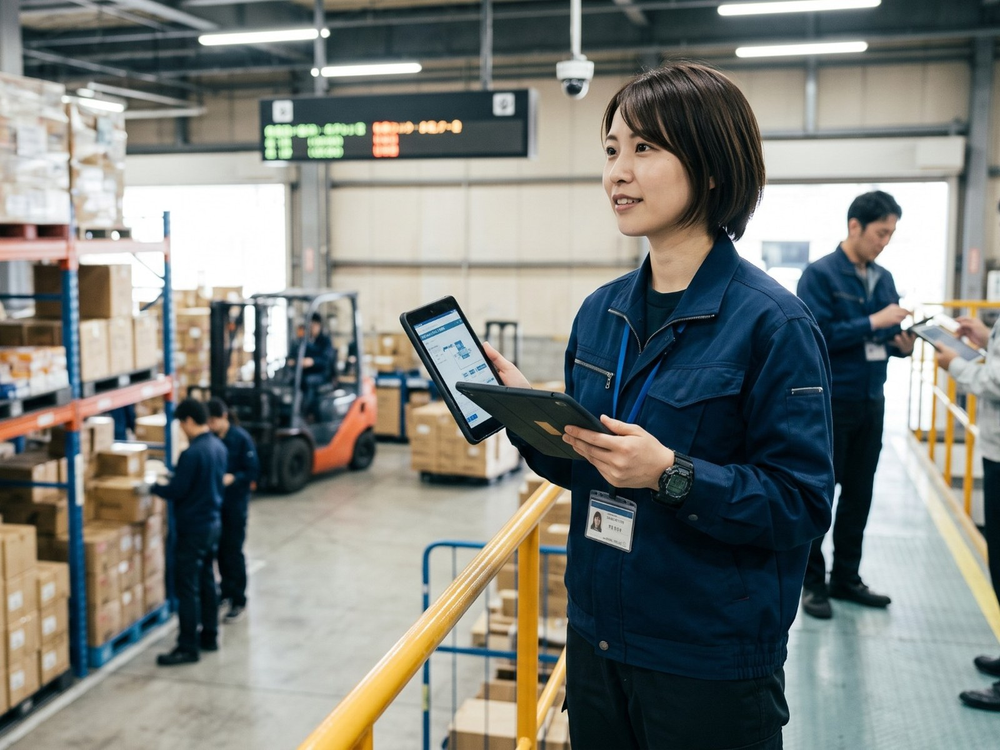

What We Do
現場の課題を、動く仕組みに変える。
PALは、物流現場を起点に、業務・システム・設備・データをつなぎ、実際に使われる仕組みをつくっています。
START現場の課題
-
01
DESIGN設計
現場全体を捉え、課題を整理する。 -
02
DEPLOY実装
必要な技術を、現場で動く形にする。 -
03
OPERATE運用
現場で安定して使える状態をつくる。 -
04
EVOLVE進化
現場の声を、次の改善へつなげる。
↻次の改善へ、そしてまた設計へ

Our Mission
モノの流れの生産性を向上させ、
企業と人と街の成長を支える。
SLOGAN ── 物流をコストから、戦略資産に。

VALUE 01
大胆に突き進もう
前例のない領域にこそ、価値がある。
まず一歩を踏み出す。

VALUE 02
チームへの貢献と信頼
仲間を信じ、チームで成果を出す。
その積み重ねが社会を動かす。

VALUE 03
匠の精神
目の前の課題に真摯に向き合い、
仕事の質を最後まで高める。
Key Contents
知りたいことから、選んでください。
PALのこと、仕事のこと、働き方のこと。気になるところからご覧ください。

People
仕事を知ったら、次は、そこで働く人を見る。
同じ仕事でも、向き合い方は人によって違います。
Career
今の仕事だけで、キャリアは決まらない。
それぞれの職種で専門性を磨きながら、担当する仕事や役割の幅を広げていきます。
- 01専門性を深める
- 02役割を広げる
- 03専門性を掛け合わせる
Our jobs
現在、募集している職種。
勤務地と募集状況をまとめました。応募条件は各募集要項でご確認ください。
CLEANLINESS
クレンリネス（衛生清掃）
清掃を、計画と運用で支える
担当センター
MARKETING / CONTENT
マーケティング・コンテンツ制作
コンテンツで新しい接点をつくる
配属先による
募集中
募集要項を見る→